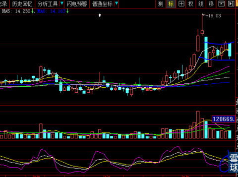
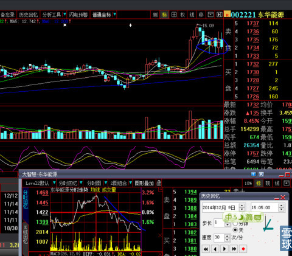
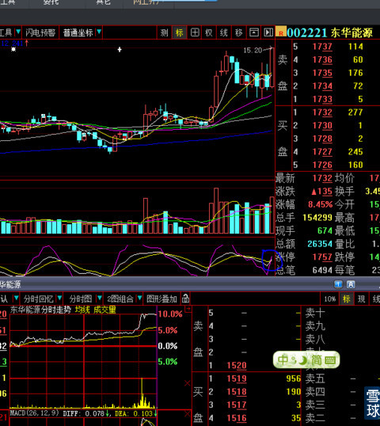
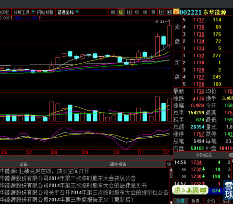
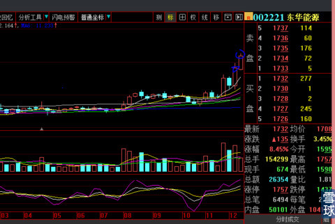

只要身在市场，心随价格的波动而起伏，涨时忘记风险，跌时身心交瘁是普通人正常反应，我们是人不是神，大跌而恐惧是正常人的正常反应，因此我始终认为这并不可耻。我说过很多次，太阳底下没有新鲜事，之所以大资金在上百年的证券市场年复一年甚至日复一日反复借助人之贪婪与恐惧达到目的，就证明这种人之本性永远不会消除与过时，市场参与者与大资金庄家的这种游戏还将再后百年的玩下去。
持股今天又出现一根中阴线（见下图），我们的彷徨、无助与恐惧蔓延很正常的会出现。

这不禁让我再次翻出电脑里自选股之一002221东华能源最近10天的K线组合表现，感叹大资金同一套玩法为何永不失效的起着强大作用。下图是2014年12月9日K线截图。注意KDJ技术指标的空头。与上图有何区别？

第二天直到下午2：30时快速涨停一根大阳线改变一切（见下图），空头气氛一扫而光，KDJ立刻转入多头，可见这种摆动指标是多么误导人！

上周末的周K线见下图，是不是很眼熟？对，就是《周线级别K线技术》所讲述状况，如出一辙，太阳底下哪里有什么新鲜事呢？

今天收盘后，东华科技的周线就变成这样了。没有前瞻性，我们何以凭据买进卖出呢？

 |
恐惧并不可耻，只要你还在市场将永远伴随炒的是心 2014-12-17 17:03:36 |
Copyright © 1996-2014 SINA Corporation All Rights Reserved.